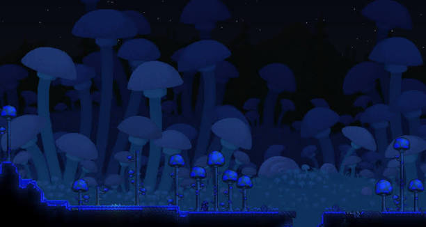

Sobre o jogo

O que é Terraria?
Terraria é um jogo de aventura e RPG em 2D. Nele, você pode explorar o mundo, pegar recursos, construir coisas e enfrentar vários inimigos.
O mapa é gerado de forma diferente em cada mundo, então sempre tem alguma coisa nova para encontrar.
O jogo foi desenvolvido pela Re-Logic e possui vários biomas, armas, itens e chefes.
O que dá pra fazer?
Explorar
Dá para explorar cavernas, florestas, desertos e vários outros lugares procurando itens.

Construir
Você pode construir casas para NPCs, bases, arenas e praticamente qualquer coisa que quiser.

Lutar
Existem vários inimigos e chefes para enfrentar durante o jogo.
Alguns biomas
| Bioma | Como é |
|---|---|
| Floresta | É onde o jogador normalmente começa. |
| Deserto | Um lugar cheio de areia e inimigos. |
| Corrupção | Um bioma perigoso com vários monstros. |
| Neve | Uma região congelada com inimigos próprios. |